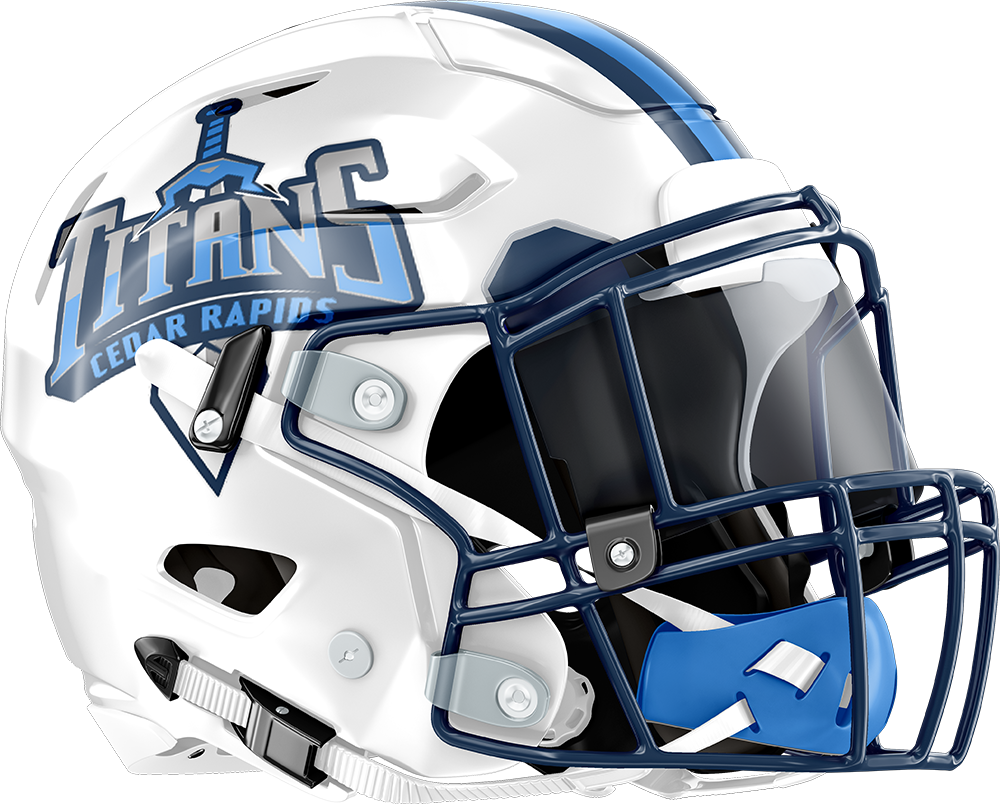

The Cedar Rapids Titans, a prominent contender in the realm of professional fantasy football, grace the GLFL stage as a formidable member of the Central division. Anchored in Waukesha, Wisconsin, the Titans have been a beacon of competition since the inception of the league in 2012. With a notable appearance in the 2018 Lakefront Bowl, where they faced off against the Vegas Knight Hawks, the Titans have etched their presence in the annals of fantasy football lore.
| Cedar Rapids Titans |
|
| Established | 2012 |
| Headquarters | Waukesha, WI |
| Team Colors | |
| Division Affiliations | |
|---|---|
| Central | 2012-2017, 2019-Present |
| West | 2018 |
| Personnel | |
| General Manager | Mitch Smith |
| Team History | |
| Cedar Rapids Titans (2012-Present) | |
| Championships | |
| Lakefront Bowl (0) | |
| Conference (1) | 2018 |
| Division (1) | 2018 |
| Playoffs (4) | 2013, 2016, 2018, 2022, 2025 |
| Winning Seasons (3) | 2013, 2016, 2018, 2025 |
|  | |
The Cedar Rapids Titans have had a turbulent history in the GLFL, marked by early struggles, frequent leadership changes, and a single near-championship run in 2018. Despite flashes of success, consistency has largely eluded the franchise over its tenure.
The Titans debuted in 2012 under GM Mitch Smith, finishing 4-10 and missing the playoffs. The team improved dramatically the next season under new GM Amanda Strutz, posting a 9-5 record and earning a playoff berth, only to suffer a lopsided first-round loss to Los Angeles. Strutz’s tenure ended after a disappointing 4-9 campaign in 2014.
Michael Arroyo took over in 2015, ushering in a new era that featured multiple playoff appearances but no titles. After a rough start, Arroyo guided the team to the postseason in 2016, highlighted by a dominant first-round victory over Boston before falling to Miami in the semifinals. The Titans’ peak came in 2018, when they moved to the West Division during a 10-team season, went 10-4, captured the division crown, and advanced to the Lakefront Bowl Lakefront Bowl, where they fell in a high-scoring battle with Vegas.
Following the 2018 run, the Titans slid into mediocrity. They posted a 5-8 record in 2019, followed by a canceled 2020 season due to COVID-19. Subsequent campaigns under Arroyo were marked by inconsistency, including a playoff berth in 2022 and early exits in other years. By 2024, original GM Mitch Smith returned, but the team bottomed out with a league-worst 2-12 record.
With one division title and a single championship appearance in 13 active seasons, Cedar Rapids remains a franchise searching for stability and its first league crown.
Embark on a celestial journey through the seasons of the Cedar Rapids Titans, a luminous entity in the vast universe of fantasy football. This comprehensive list meticulously chronicles the season-by-season records of the Titans franchise, spanning from their inception in 2012 to the present day. Dive into the cosmic tapestry of playoff battles, the glow of league awards, and the varying constellations of leadership under different General Managers. Explore the history of a team that has added its unique radiance to the ever-evolving narrative of the GLFL.
| Lakefront Bowl Champions | Conference Champions | Division Champions |
| Year | Div | W | L | Postseason | Awards | GM |
|---|---|---|---|---|---|---|
| 2012 | Central | 4 | 10 | Smith | ||
| 2013 | Central | 9 | 5 | Wild Card vs Los Angeles 70-158 L | Strutz | |
| 2014 | Central | 4 | 9 | |||
| 2015 | Central | 5 | 8 | Arroyo | ||
| 2016 | Central | 7 | 6 | Wild Card vs Boston 127-84 W Divisonal Playoffs vs Miami 98-179 L |
||
| 2017 | Central | 4 | 9 | |||
| 2018 | West | 10 | 4 | Divisonal Playoffs vs Milwaukee 128-117 W Lakefront Bowl vs Vegas 156-213 L |
GMoY | |
| 2019 | Central | 5 | 8 | |||
| Season Canceled | ||||||
| 2021 | Central | 5 | 9 | Arroyo | ||
| 2022 | Central | 7 | 7 | Wild Card vs Cleveland 103-143 L | ||
| 2023 | Central | 5 | 9 | |||
| 2024 | Central | 2 | 12 | Smith | ||
| 2025 | Central | 8 | 6 | Wild Card vs Los Angeles 199.75-242.5 L | ||
| Season Record | 75 | 102 | ||||
| Playoff Record | 2 | 5 | ||||
| Total Record | 77 | 107 | ||||
Throughout the storied history of the Cedar Rapids Titans, several notable individuals have graced the position of General Manager, each leaving an indelible mark on the celestial journey of the team. Mitch Smith, the team’s inaugural GM, set the course, laying the foundation for what was to come. Amanda Strutz followed, steering the Titans into the postseason during her tenure. Michael Arroyo, who led the team through multiple playoff appearances and a memorable quest for the Lakefront Bowl in 2018, continued to build on that legacy. Now, in a full-circle moment, Mitch Smith has returned after 12 years, once again taking the helm with hopes of reigniting the Titans’ championship aspirations. Together, these GMs have woven the narrative of the Titans, contributing to the luminosity that defines the team’s legacy in the GLFL universe.
| General Manager | Year | W | L | W% | GMoY | Lakefront Bowl Champs | Conf. Champs | Div. Champs | Playoffs | Winning Seasons |
|---|---|---|---|---|---|---|---|---|---|---|
| Mitch Smith | 2012, 2024-Present | 14 | 29 | 0.326 | 0 | 0 | 0 | 0 | 1 | 1 |
| Michael Arroyo | 2015-2023 | 48 | 60 | 0.444 | 1 | 0 | 1 | 1 | 3 | 2 |
| Amanda Strutz | 2013-2014 | 13 | 15 | 0.464 | 0 | 0 | 0 | 0 | 1 | 1 |


| Year | Player | Position | Points Scored |
|---|---|---|---|
| Year | General Manager | Record |
|---|---|---|
| 2018 | Michael Arroyo | 10-4 |